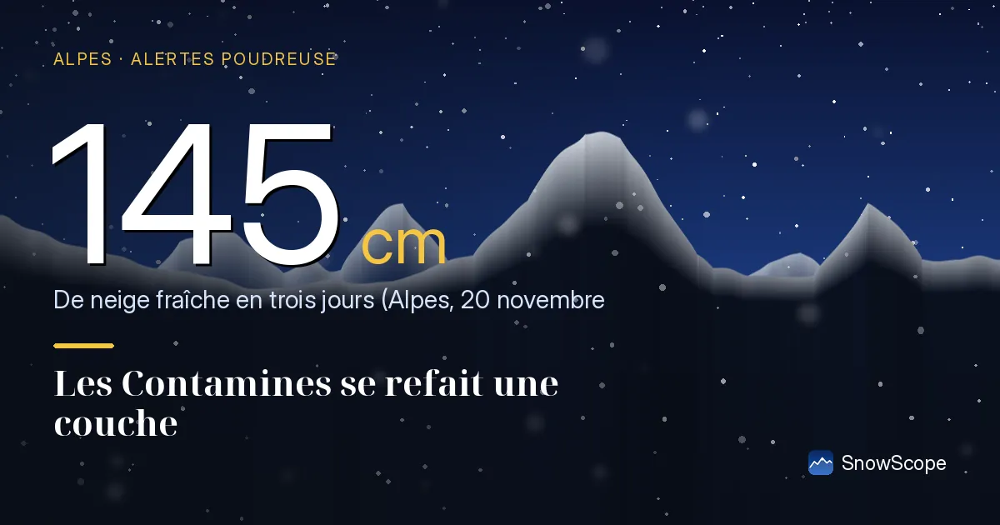

Les Contamines se refait une couche : 145 cm de neige fraîche en trois jours (Alpes, 20 novembre)
Les Contamines a connu la plus importante chute de neige des trois derniers jours, portant ses pentes supérieures à 115 cm. Dans les Alpes, 874 stations enneigées sont dénombrées après une vague qui a ajouté 27 000 km² de couverture blanche en 48 heures.
Consultez les prévisions neige en temps réel pour Les Contamines sur l'application SnowScopeHauteurs de neige, alertes poudreuse et carte 3D, gratuitement.
Quelles stations ont reçu le plus ?
Les Contamines arrive en tête de la région avec 145 cm de neige fraîche en trois jours. À proximité, Orelle a enregistré 143 cm et Courmayeur 140 cm. Les trois se situent à bonne altitude : 2 444 m, 3 221 m et 2 749 m respectivement, ce qui a permis à la poudre de rester froide.
Le 20 novembre, 77 180 km² des Alpes sont enneigés selon nos observations, répartis entre 874 stations. C'est une augmentation de 26 680 km² en seulement deux jours.
| Station | Hauteur de neige | Neige fraîche, 72 h | Attendu, jours suivants | Sommet |
|---|---|---|---|---|
| Les Grands Montets | 95 cm | 153 cm | 87 cm | 2 768 m |
| Les Contamines | 115 cm | 145 cm | 89 cm | 2 444 m |
| Orelle | 145 cm | 143 cm | 92 cm | 3 221 m |
| Courmayeur | 126 cm | 140 cm | 80 cm | 2 749 m |
| Arêches Beaufort | 111 cm | 139 cm | 102 cm | 2 319 m |

Les pentes supérieures et ce qu'il faut attendre en altitude
Aux Contamines, le sommet de la montagne (2 444 m) compte maintenant environ 50 cm. Le secteur médian (1 801 m) affiche 30 cm, ce qui représente 50 % de plus que la normale pour fin novembre : les hivers précédents montrent une moyenne de 20 cm à cette date.
La base à 1 158 m est fine avec 4 cm, les pistes basses resteront donc inégales jusqu'à ce que la neige atteigne cette altitude. Consacrez votre journée aux remontées supérieures où l'épaisseur et la fraîcheur vous attendent.
Quand la prochaine poudre arrivera
Samedi 21 novembre sera calme avec 7 cm ajoutés, mais dimanche 22 novembre en apportera 63 cm. Lundi 23 novembre en ajoute encore 19 cm. D'ici là, Les Contamines aura environ 89 cm de plus qu'aujourd'hui.
Le vent et le soleil entre les événements neigeux peuvent ramollir ce qui est tombé, le timing est donc important. La poudre légère se préserve mieux à l'ombre et sur les pentes nord ; les pentes sud peuvent devenir croûtées dès mid-morning une fois que le soleil se lève.
L'isotherme zéro et ce que cela signifie pour votre descente
Samedi 21 novembre, l'isotherme zéro — l'altitude où la neige se transforme en pluie — se situe entre 1 680 m et 2 850 m aux Contamines. Dimanche, elle descend à 1 370–2 890 m ; lundi, elle chute à 1 370–2 450 m. Ces variations importantes signifient que la base de la montagne peut connaître un mélange de pluie et neige durant la partie la plus chaude de chaque jour.
La pluie sur la neige fraîche peut lier les couches et renforcer la stabilité, ou affaiblir le manteau neigeux selon la profondeur d'infiltration. La poudre fraîche au-dessus de 2 000 m restera propre le plus longtemps.
Comment cette saison se profile
À 1 801 m, Les Contamines compte maintenant 30 cm. Dans les hivers précédents à cette même date, la même altitude affichait généralement 20 cm. Selon nos observations, seuls 15 des 46 derniers fins novembre ont été plus importants, donc cette saison démarre fort, bien qu'une profondeur précoce ne garantisse pas un hiver lourd.
La région dans son ensemble atteindra 1 040 stations enneigées le 23 novembre, contre 874 aujourd'hui. La zone couverte de neige devrait atteindre 100 870 km².
Sur le terrain : ce que les stations météorologiques ont relevé
Trois stations de montagne offrent un aperçu de la profondeur réelle le 20 novembre. Tsanfleuron (2 569 m) a mesuré 74 cm avec 34 cm de chute en 24 heures. Hohe Munde Gipfel (2 580 m) a enregistré 62 cm, dont 40 cm tombés en un jour. À une altitude plus basse, Daone (Malga Bissina, 1 785 m), le total était 45 cm, presque entièrement des 24 dernières heures.
Ces mesures précises montrent la répartition de la neige par altitude et confirment les estimations pour les stations proches d'elles.
Conseils aux skieurs
- Skiez les pentes nord-exposées supérieures dimanche matin en premier pour trouver la poudre la plus douce avant que le vent et le soleil ne la changent.
- Consultez le bulletin officiel d'avalanche avant toute randonnée hors-piste, en particulier sur les pentes raides où la neige fraîche repose sur d'anciennes couches.
- Les weekends les plus chargés, prenez les remontées tôt et descendez avant mid-morning pour éviter le risque de pluie l'après-midi qui augmente à mesure que vous descendez.
- Évitez les pistes basses (en dessous de 1 800 m) jusqu'à ce que plus de neige les atteigne ; une maigre couverture sur l'herbe et les rochers nuit au ski et endommage l'équipement.
- Activez l'alerte poudre pour Les Contamines afin de recevoir une notification quand le prochain grand jour de neige approche.
À propos de ces chiffres
Les hauteurs de neige des stations sont la neige la plus épaisse sur le haut du domaine à la date indiquée ; ce sont des estimations pour une zone, pas une mesure en un point. Les prévisions peuvent changer. Consultez toujours le bulletin d'avalanche officiel avant le hors-piste.
Bulletins d'avalanche officiels: EAWS (Alps)
Citer ce bulletin
Pour la recherche, l'enseignement ou la presse : chiffres et graphiques réutilisables librement sous CC BY 4.0 avec cette citation.
SnowScope (2026), Les Contamines se refait une couche : 145 cm de neige fraîche en trois jours (Alpes, 20 novembre), https://snowscope.app/blog/fr/2026/11/alps-les-contamines-fresh-snow-powder-alert-20-november-2026.html, consulté le 2026-11-20
SnowScope (Atlas Labs). (2026, November 20). Les Contamines se refait une couche : 145 cm de neige fraîche en trois jours (Alpes, 20 novembre). SnowScope snow reports. https://snowscope.app/blog/fr/2026/11/alps-les-contamines-fresh-snow-powder-alert-20-november-2026.html
BibTeX
@misc{snowscope2026alpslescontaminesfreshsn,
author = {{SnowScope (Atlas Labs)}},
title = {Les Contamines se refait une couche : 145 cm de neige fraîche en trois jours (Alpes, 20 novembre)},
year = {2026},
month = nov,
howpublished = {\url{https://snowscope.app/blog/fr/2026/11/alps-les-contamines-fresh-snow-powder-alert-20-november-2026.html}},
note = {Published 2026-11-21 11:39 UTC; accessed 2026-11-20}
}· CC BY 4.0 · Méthodes, données et outils →
Les Contamines : neige et température selon l'altitude, cet hiver vs l'hiver dernier (outils) →
Suivre Les Contamines
Gratuit : un message quand la neige arrive, et la météo chaque matin.